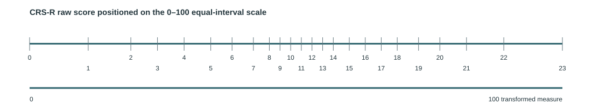

BRIEF VIDEO
Watch the overview
Learn how to interpret change in serial CRS-R assessments, including state-of-consciousness transitions, transformed scores, and change beyond measurement error.
CLINICIAN RESOURCE
Using the Coma Recovery Scale–Revised (CRS-R)
Detecting and interpreting change in disorders of consciousness can be challenging. This toolkit provides brief education and clinical decision support to help clinicians understand and interpret change measured with the CRS-R.
Transitions between states of consciousness remain clinically important, but recovery also occurs within diagnostic states. Serial measurement can help identify change that may not be captured by a diagnostic transition alone.
LEARN
Learn how to interpret change in serial CRS-R assessments. Start with either resource below, or explore individual topics for more detail.
BRIEF VIDEO
Learn how to interpret change in serial CRS-R assessments, including state-of-consciousness transitions, transformed scores, and change beyond measurement error.
QUICK REFERENCE
Keep this one-page guide handy for a concise reference when interpreting CRS-R change.
Open Quick Reference GuideThe Coma Recovery Scale–Revised (CRS-R) is the reference-standard behavioral assessment used to evaluate neurobehavioral function and support diagnosis of disorders of consciousness. It includes Auditory, Visual, Motor, Oromotor/Verbal, Communication, and Arousal subscales.
Specific behaviors align with diagnostic criteria for states of consciousness. Total scores also describe overall neurobehavioral performance, but interpreting change in those scores requires additional consideration.
This toolkit focuses on interpreting change, not teaching CRS-R administration. Standardized administration and scoring are essential before interpreting serial results.
Movement between states of consciousness is a traditional and clinically essential way to describe recovery. Select a state below for a brief definition and hallmark behaviors.
A patient may demonstrate measurable neurobehavioral improvement without crossing a diagnostic boundary. Conversely, a patient may cross a state boundary with relatively little movement in total score. Use state-of-consciousness classification and measurement of change as complementary lenses.
CRS-R raw total scores are ordinal: they rank performance, but the distance between adjacent scores is not constant. The same raw-score difference can represent different amounts of neurobehavioral change depending on where it occurs on the scale.

Describe observed performance
Supports quantification of differences over time
No assessment is perfectly precise. Minimal detectable change (MDC) estimates how large a difference between two measurements must be to exceed expected measurement error at a specified level of confidence.
A difference of at least 9 units on the transformed 0–100 scale indicates change beyond measurement error with 90% confidence.
A difference of at least 11 units indicates change beyond measurement error with 95% confidence. This is the more conservative of the two global thresholds.
Conditional MDC accounts for differences in measurement precision across the measure rather than assuming one threshold applies everywhere.
State of consciousness
What diagnostic behavioral criteria are demonstrated?
Serial CRS-R findings
What behaviors and scores changed?
Equal-interval measurement
How much measured change occurred?
Measurement error
Does the observed difference exceed expected variability?
Use these lenses together with assessment conditions and the broader clinical picture. The interpretation tool helps with the measurement steps; it does not replace clinical reasoning.
INTERPRET CHANGE
Enter two CRS-R raw total scores. The tool converts them to the 0–100 equal-interval measure and supports interpretation using several approaches to change beyond measurement error.
RESOURCES
One-page guide to transformed measurement and change beyond measurement error.
Open guide →Training and resources from the Traumatic Brain Injury Model Systems.
TBIMS CRS-R resources →Weaver et al. Interpreting Change in Disorders of Consciousness Using the Coma Recovery Scale-Revised. Journal of Neurotrauma. 2024.
Grady-Dominguez et al. Better Measurement in Rehabilitation: Classical and Contemporary Approaches to Measurement Error. Archives of Physical Medicine and Rehabilitation. 2026.
ABOUT
This clinician-facing implementation package is being developed to support evidence-based interpretation of serial CRS-R assessments in hospitalized patients with disorders of consciousness.
This site is a research prototype intended for usability testing and team review. It is not a substitute for standardized CRS-R administration, clinical judgment, or comprehensive evaluation.
The site does not require a login or database. Score calculations occur in the browser. Do not enter protected health information.
Development has been supported in part by the Foundation for Physical Therapy Research Acute Care PODS I Award. REDCap resources are supported through the Colorado Clinical and Translational Sciences Institute.